GTA V
Characters
 Amanda De Santa
Amanda De Santa Dave Norton
Dave Norton Dave Norton (FIB)
Dave Norton (FIB) Devin Weston
Devin Weston Dr. Isiah Friedlander
Dr. Isiah Friedlander Franklin Clinton
Franklin Clinton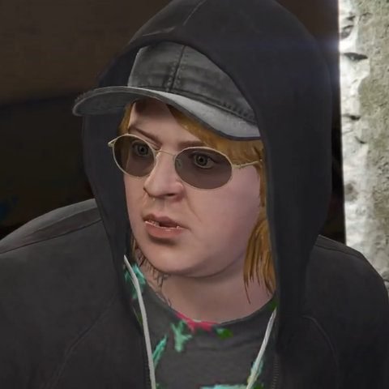
Jimmy De Santa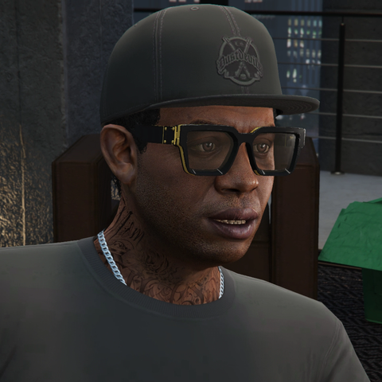
Lamar Davis Lester Crest
Lester Crest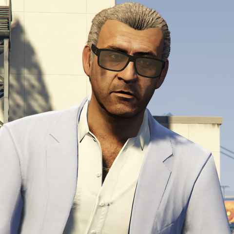
Martin Madrazo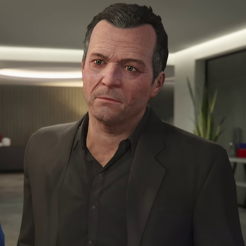
Michael De Santa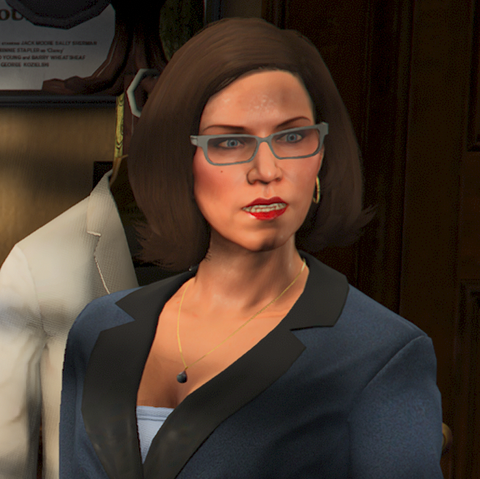
Molly Schultz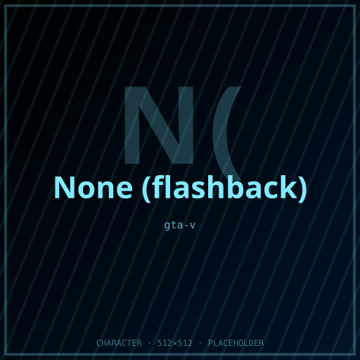
None (flashback)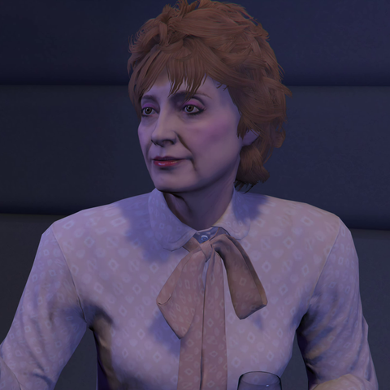
Patricia Madrazo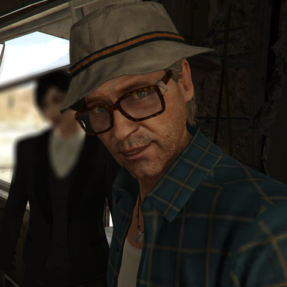
Ron Jakowski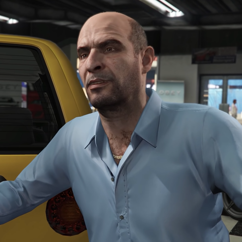
Simeon Yetarian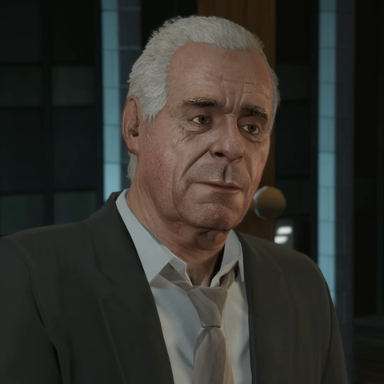
Solomon Richards Steve Haines
Steve Haines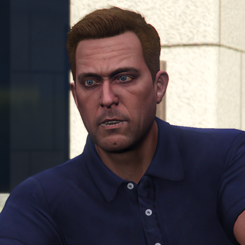
Steve Haines (FIB)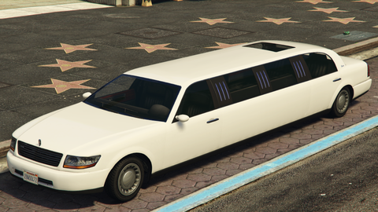
Stretch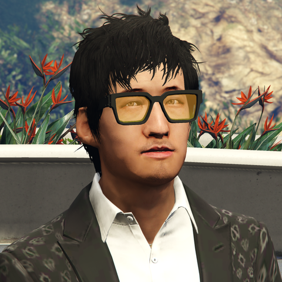
Tao Cheng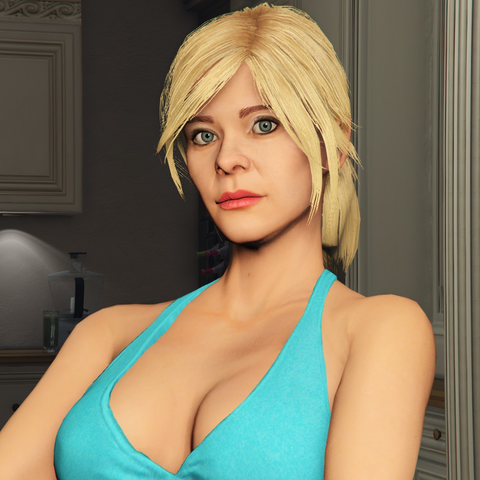
Tracey De Santa Trevor Philips
Trevor Philips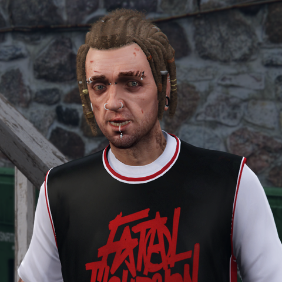
Wade Hebert
| Image | Name | Role | Affiliations | Status |
|---|---|---|---|---|
| Amanda De Santa | Michael's wife | De Santa family | Alive |
| Dave Norton | FIB agent | FIB | Alive |
| Dave Norton (FIB) | Mission giver | — | — |
| Devin Weston | Antagonist | Weston Holdings | Varies |
| Dr. Isiah Friedlander | Michael's therapist | Private practice | Alive |
| Franklin Clinton | Protagonist | Chamberlain gang (former), De Santa crew | Alive |
| Jimmy De Santa | Michael's son | De Santa family | Alive | |
| Lamar Davis | Friend | Chamberlain gang | Alive | |
| Lester Crest | Heist planner | De Santa crew | Alive |
| Martin Madrazo | Associate, antagonist | Madrazo cartel | Alive | |
| Michael De Santa | Protagonist | De Santa family, FIB (asset) | Alive | |
| Molly Schultz | Weston's lawyer | Weston Holdings | Deceased | |
| None (flashback) | Mission giver | — | — | |
| Patricia Madrazo | Ally | Madrazo family | Alive | |
| Ron Jakowski | Associate | Trevor Philips Enterprises | Alive | |
| Simeon Yetarian | Employer | Premium Deluxe Motorsport | Alive | |
| Solomon Richards | Mission giver | — | — | |
| Steve Haines | Antagonist, FIB | FIB | Varies |
| Steve Haines (FIB) | Mission giver | — | — | |
| Stretch | Antagonist | Chamberlain gang | Deceased | |
| Tao Cheng | Mission giver | — | — | |
| Tracey De Santa | Michael's daughter | De Santa family | Alive | |
| Trevor Philips | Protagonist | Trevor Philips Enterprises, The Lost MC (former) | Alive |
| Wade Hebert | Associate | Trevor Philips Enterprises | Alive |